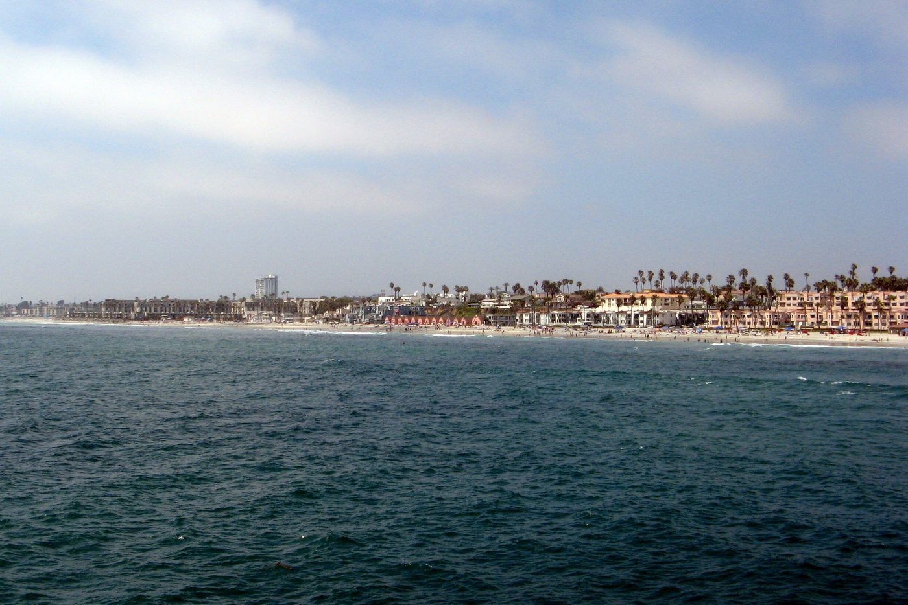
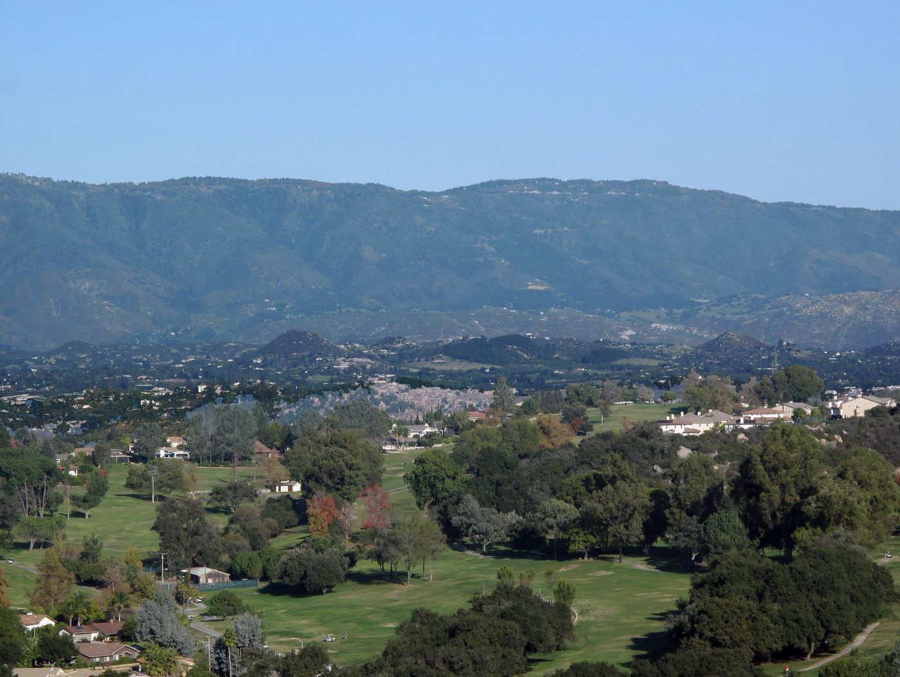
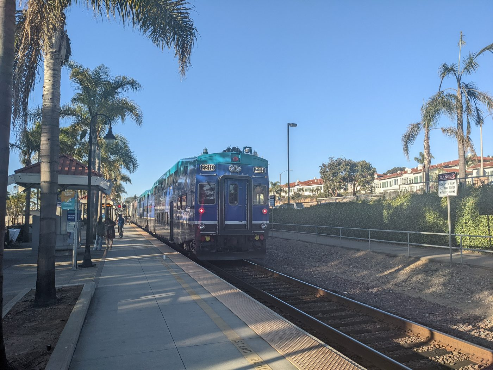
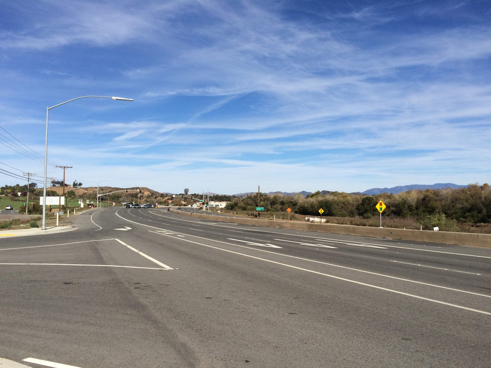

01

North County, San Diego County
Six cities on the coast and inland, with saved searches and the things Jim checks before you write an offer.
North County at a glance
North County is a name for the northern part of San Diego County, not a city or a government of its own. Its coastal cities, Oceanside, Carlsbad and Encinitas, sit along the coast rail line; its inland cities, Vista, San Marcos and Escondido, follow State Route 78 east toward Interstate 15.
Each of the six has its own mayor and city council, and the County of San Diego governs the land between them. Start with coast or inland, then pick the city: the school district, the water agency and the building rules all follow the address.
Saved searches
Each card opens a live search of MLS listings, updated as they change.

01

02

03

04
<!-- IDX_ZONE: homes-for-sale-north-county-san-diego-feed -->
The newest North County San Diego listings in one compact row, six to eight homes. Builder places the Showcase hotsheet shortcode here in its compact layout.
San Diego County has 18 incorporated cities, and six of them make up the North County on this site. Outside their limits the County of San Diego is the local government, for communities such as Fallbrook, Bonsall, Hidden Meadows and Twin Oaks.
Public agencies use the name all the same. Camp Pendleton calls itself the largest employer in North San Diego County, and the North County Transit District runs the trains and buses that link the six cities.
Oceanside, Carlsbad and Encinitas line the coast south of Camp Pendleton, and the COASTER stops in all three on its way to downtown San Diego. Oceanside incorporated in 1888 and Carlsbad in 1952. Encinitas followed in 1986, when New Encinitas, Old Encinitas, Cardiff-by-the-Sea, Olivenhain and Leucadia became one city.
Near the beach, the state's coastal zone adds a permit step for many projects. In Oceanside the zone takes in everything from the inland side of Coast Highway to the ocean, plus land near its river, creek and lagoon (the City's coastal program).

Vista, San Marcos and Escondido follow State Route 78 east from the coast to Interstate 15, and the SPRINTER runs 22 miles along the same corridor from Oceanside to Escondido. Escondido incorporated in 1888 in a valley its founders had divided into small farms for grapes and citrus; Vista became a city in 1963.
Escondido sits where State Route 78 meets Interstate 15, about 28 miles by road from Old Town Temecula.
The COASTER serves eight stations between Oceanside and downtown San Diego, and the SPRINTER runs inland to Escondido. The two meet at the Oceanside Transit Center, where Amtrak's Pacific Surfliner and Metrolink stop too (NCTD's stations).
By car, Interstate 5 follows the coast, State Route 78 crosses from Oceanside to Escondido, and Interstate 15 runs north from Escondido into Riverside County.
Day to day
School information is factual and by district. Always confirm a specific address in the district's school finder.
Questions
No. It is a name for the northern part of San Diego County. Its cities are separate cities, each with its own mayor and council, and the County governs the land between them.
This site covers six: Oceanside, Carlsbad and Encinitas on the coast, and Vista, San Marcos and Escondido inland along State Route 78. Fallbrook, to the north, is an unincorporated community with its own page here.
There is no single district. Each city has its own, and the lines do not always follow city limits. The County Office of Education's school finder lists every district.
By road from the six city halls, downtown San Diego is 26 to 42 miles away, with Encinitas closest, and Old Town Temecula is 25 to 42 miles away, with Vista closest.
Nearby
Resources
Contact
Tell Jim whether you lean toward the coast or inland, and he will walk you through the cities on that side and what to check in each before you go.